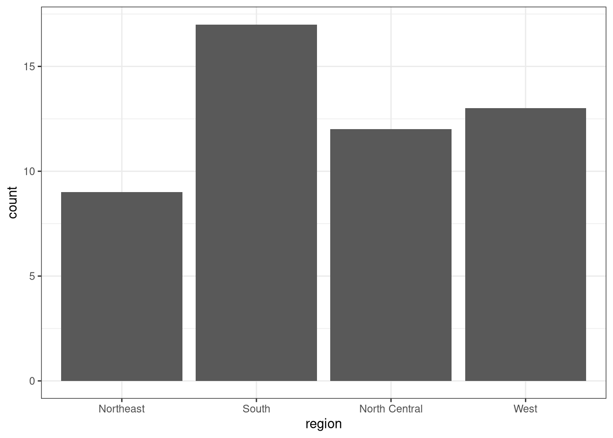
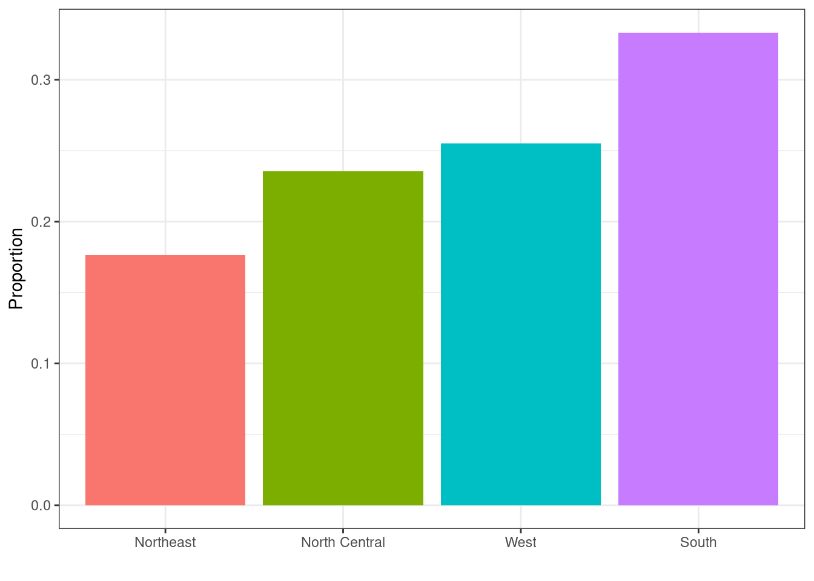
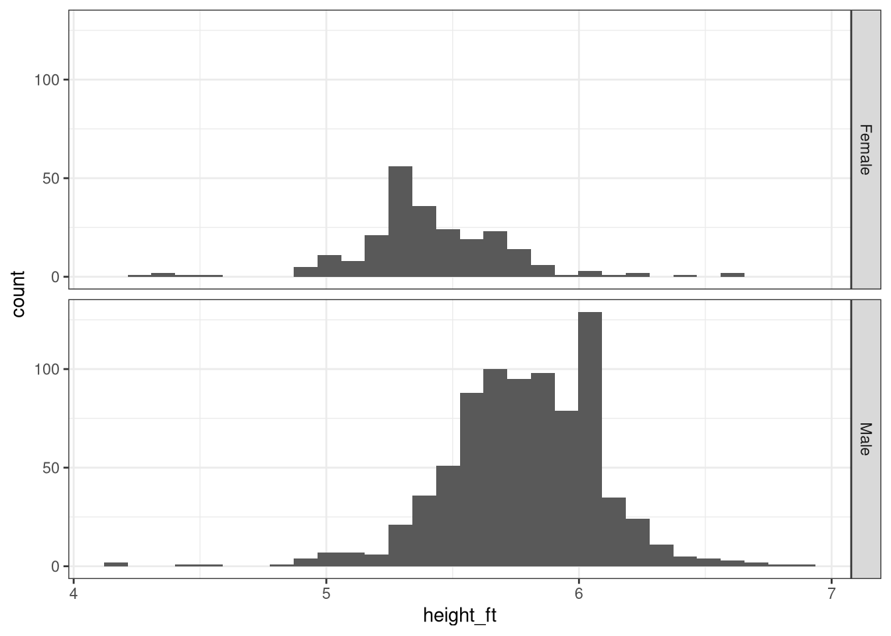
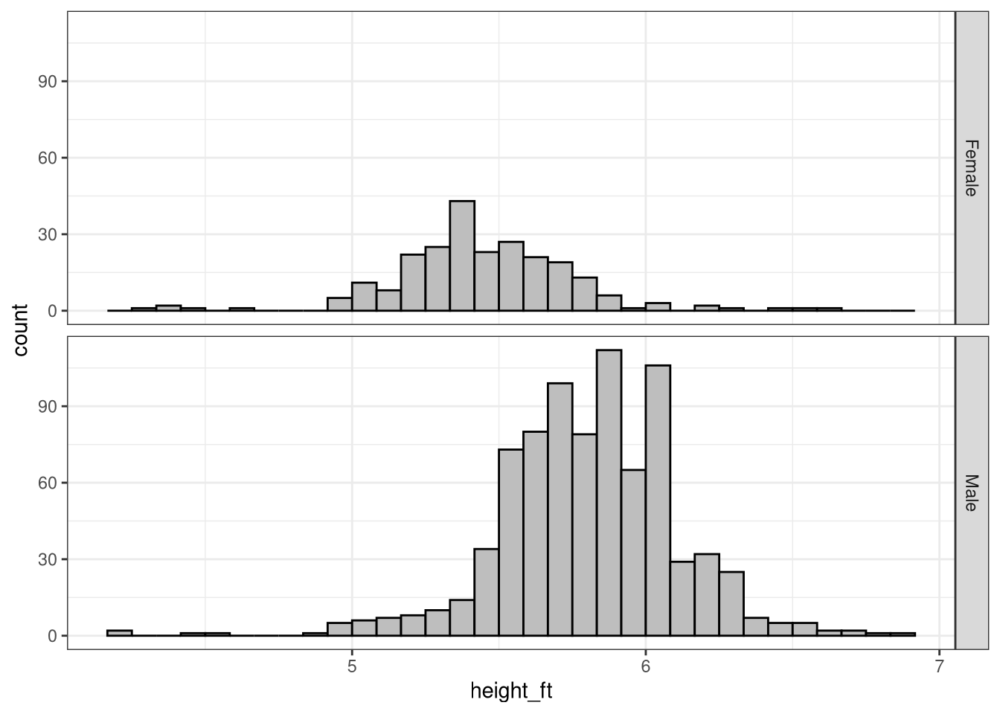
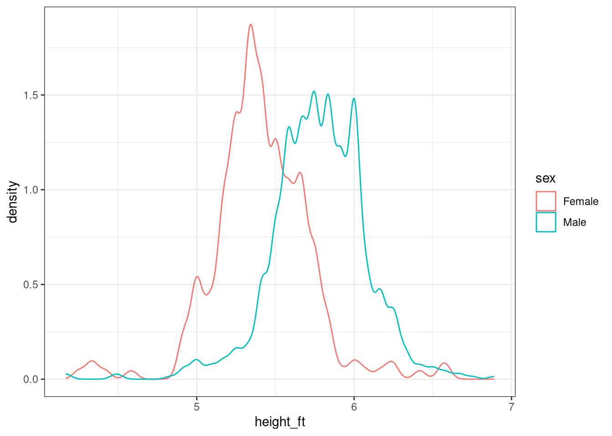
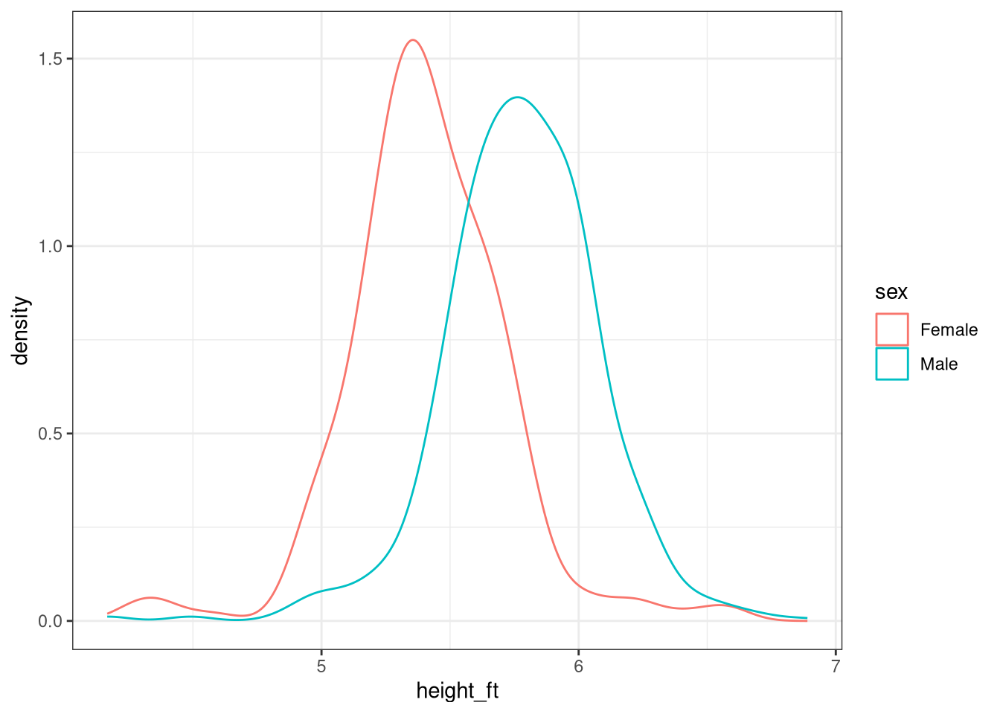
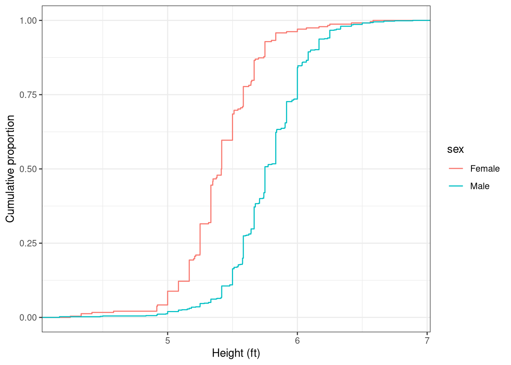
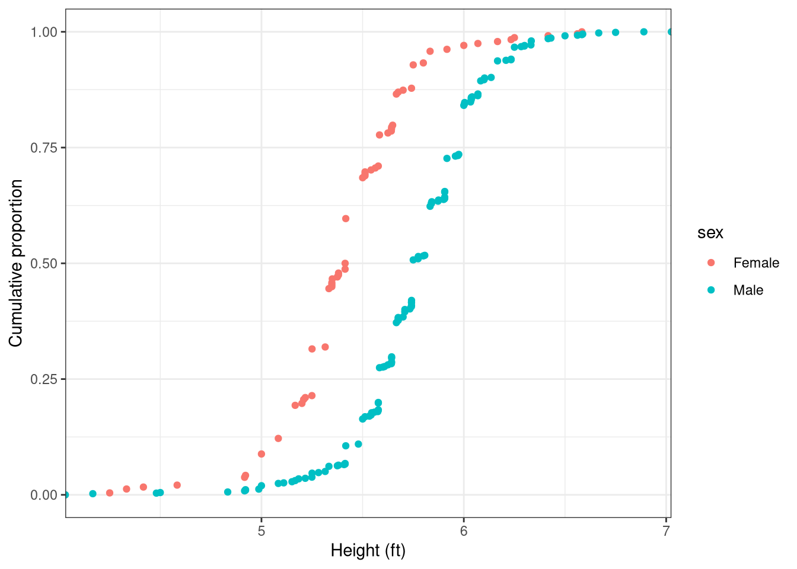

# Set up - load libraries
library(tidyverse)
library(dslabs)
# Set a ggplot2 theme - get rid of grey bkgd
set_theme(theme_bw())Visualizing Distributions
Categorical Data
To demonstrate categorical data distributions, we’ll use the murders data from the dslabs package.
data(murders)Bar/Column Chart
Let’s start with the simple version: We want to count the number of states in each region.
murders |>
ggplot(aes(x = region)) +
geom_bar()- 1
- Show region on the x-axis
- 2
- Create a bar chart by counting up the number of points in each x-category. The bar’s height will be the number of points.

This is nice enough, but often we want to show the proportion of points in each category, and we may want to color the bars by category as well. We might also want to reorder the x-axis so that the bars are in increasing order.
murders |>
ggplot(aes(x = region)) +
geom_bar(aes(y = after_stat(prop),
group = 1))- 1
- This computes the proportion of points in each group of plotted objects (in this case, each bar)
- 2
-
Specifying
group = 1says that the proportion should be computed over all bars, not just each region’s bar (leaving this out gets 4 bars with height 1).
Unfortunately, it’s a bit harder to reorder and color the bars in by region, for reasons that get a bit too deep into ggplot2 theory to worry about. Sometimes, it’s far easier just to do the calculations we want ahead of time, and then tell ggplot2 to make the chart we want without asking it to do the calculations at the same time.
state_regions <- murders |>
count(region) |>
mutate(
prop = n/sum(n),
region = fct_reorder(region, prop)
)- 1
- Count the number of rows in each region
- 2
- Compute proportions
- 3
- Rearrange bars in increasing order
In these cases, we have to switch from using geom_bar to geom_col (col is for column). geom_bar does the calculations for us, geom_col expects us to have done the calculations ahead of time.
state_regions |>
ggplot(
aes(
x = region,
y = prop,
fill = region
)) +
geom_col() +
ylab("Proportion") + xlab("") +
guides(fill = "none")- 1
- Show region on x-axis
- 2
- Show proportion on y-axis
- 3
- Color objects by region (redundant to x-axis, but pretty)
- 4
-
Use columns (bars) to show x and y.
geom_colis used when you pre-compute proportions,geom_baris used when you want to compute these on the fly – in this case, you don’t provide a y aesthetic. - 5
- Axis labels
- 6
- Don’t show a legend, as it’s redundant to the x-axis labels, and thus a waste of space.

Numerical Data
To demonstrate distributions of numerical data, we’ll use the heights data from the dslabs package.
data(heights)Histograms
heights <- heights |>
mutate(height_ft = height/12)- 1
- Create a height variable in feet, rather than inches
heights |>
ggplot(aes(x = height_ft)) +
geom_histogram() +
facet_grid(sex~.)- 1
-
Show
height_fton the x-axis - 2
- Create a histogram. Implicitly, this is going to bin the data, then count up how many rows are in each bin.
- 3
-
Create separate plots for each value of sex. facets use
rows ~ colssyntax, so here we say arrange the plots in rows, with nothing in columns.
`stat_bin()` using `bins = 30`. Pick better value `binwidth`.
Histograms are very sensitive to how the bins are aligned and calculated. By default, ggplot2 uses 30 bins, which is not always optimal. It is often useful to think about how the data is collected and what its range is, and to pick a bin width value based on that. Here, I’ve set the bin width to 1/12 (1 inch) and forced the bins to start at 0, including the left side and not including the right.
heights |>
ggplot(aes(x = height_ft)) +
geom_histogram(
fill = "grey", color = "black",
binwidth = 1/12,
boundary = 0,
closed = "left"
) +
facet_grid(sex~.) - 1
- Set bin width to 1 inch or 1/12 foot
- 2
- Start bins with a left boundary of 0. Choosing this value can change the appearance of the histogram, and as a result, can change what you see in the data. I’ve chosen 0 here so that we can see how many men “round up” to 6’.
- 3
- “left” here indicates which part of the interval is “closed” (e.g. is <= rather than <). So counts will be calculated as left <= x < right, starting at a left boundary of 0. So, we would expect to see [5.0, 5 + 1/12), [5 + 1/12, 5 + 1/6), … as bins.

Density
A density plot is essentially a smoothed version of a histogram. The area under a density curve should be approximately equal to 1 (this is important for probability calculations), and so the curve’s y-values are scaled to enforce this constraint.
heights |>
ggplot(aes(x = height_ft, color = sex)) +
geom_density()- 1
-
Show
height_fton the x-axis, and plot different values for each sex. - 2
- Use a kernel density estimate, which creates a smoothed version of a histogram. By default, ggplot estimates the best ‘bandwidth’ (similar to the bin width) for you.
As with histograms, density curves are sensitive to the bin width, but because they are continuous and not actual bins, we talk about the ‘bandwidth’ of a density rather than the bin width. You can adjust the bandwidth of a density curve using the adjust parameter in geom_density
heights |>
ggplot(aes(x = height_ft, color = sex)) +
geom_density(adjust = .5)- 1
- You can tweak the bandwidth used by passing in an adjustment factor. Here, I’ve halved the bandwidth, and the result is a much more spiky density.

As with histograms, you should try a couple of different values of adjust to ensure you understand the distribution of your data.
heights |>
ggplot(aes(x = height_ft, color = sex)) +
geom_density(adjust = 1.2)- 1
- You should try multiple values for adjust, just like you should try multiple values for the bin width in a histogram.

Density curves make it easy to see where the mode (most occurring, most frequent) value of a distribution is – it’s at the top.
When a distribution is symmetric (it has roughly the same shape on the right and left side of the mode), the mode is fairly close to the median - the middle of the distribution. When a distribution is skewed, however, the median can be quite a ways away from the mode.
The mean, or numerical average value, is generally almost the same as the median when a distribution is symmetric, but it can be quite different when there is a skewed distribution. One example of this is income - the median US household income in 2025 was $83,730, and the census primarily reports medians because they are not swayed by extreme values (billionaires), where the mean will increase with the presence of those extreme values in a way that doesn’t really describe the middle of the distribution. You can see some estimates of the average (mean) household income compared to the median1 if you’re curious.
Empirical Cumulative Distribution Function (ECDF)
In an ECDF, we essentially take the bins of a histogram and stack them cumulatively (we scale by # observations so that we get a proportion, but the idea is the same). ECDFs are used to compare distributions, but they are hard to read (and thus they don’t get used very often).
heights |>
ggplot(aes(x = height_ft, color = sex)) +
stat_ecdf(geom = "step") +
ylab("Cumulative proportion") + xlab("Height (ft)")- 1
- Put height in feet on the x-axis, and use color to show data from each sex.
- 2
-
Calculate (
stat) the ECDF for each group (e.g. each color/sex), and plot using the step function (this creates horizontal and vertical lines in a staircase pattern to connect adjacent points) - 3
- Set axis labels.

We can see what the ECDF statistic actually calculates if we use the point geom:
heights |>
ggplot(aes(x = height_ft, color = sex)) +
stat_ecdf(geom = "point") +
ylab("Cumulative proportion") + xlab("Height (ft)")- 1
- Put height in feet on the x-axis, and use color to show data from each sex.
- 2
-
Calculate (
stat) the ECDF for each group (e.g. each color/sex), and plot using the raw points. - 3
- Set axis labels.
